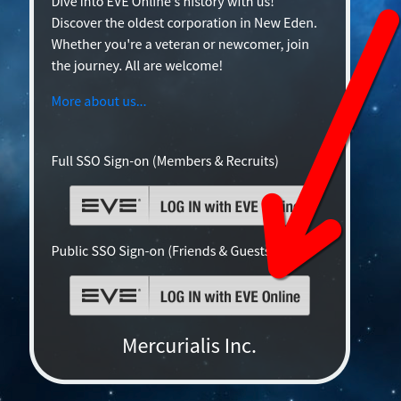

Welcome to Mercurialis Inc.
Communications
In-game contact:
Join the in-game channel 'MINC BAR' and reach out to the leadership listed in the Message of the Day (MOTD).
Out-of-game contact:
Join our Discord server! To access our Discord, you must be ESI verified through SeAT. The link to our server is provided on SeAT.

Click here for public authentication (be sure to click the 'Friends and Guests' link to limit the ESI information you share).
Allies:
For the quickest response, feel free to ping us on Jabber or the forums.
Diplomatic Contacts
We have been around long enough to know that good diplomacy matters. If you have something worth talking about, our leadership team is listening. That said, our diplomats are also available for the following matters:
- Negotiating over asteroid belts you “definitely claimed first,”.
- Arranging mutual defense pacts against NPC mining fleets.
- Settling disputes over salvaging rights. We will pretend to care.
- Discussing trade agreements involving exotic dancers, Quafe Ultra, and PI materials no one else cares about.
- Requesting apologies for shooting blues by "accident."
- Complaining about structure timers inconveniently set during dinner, meetings, or major life events.
Diplomat Contact Information:
- In-game mail.
- Discord (see above instructions).
- Alliance Forums or Jabber.
- A well-timed covert cyno and 500 unmarked Plex. (Just kidding. Maybe.)